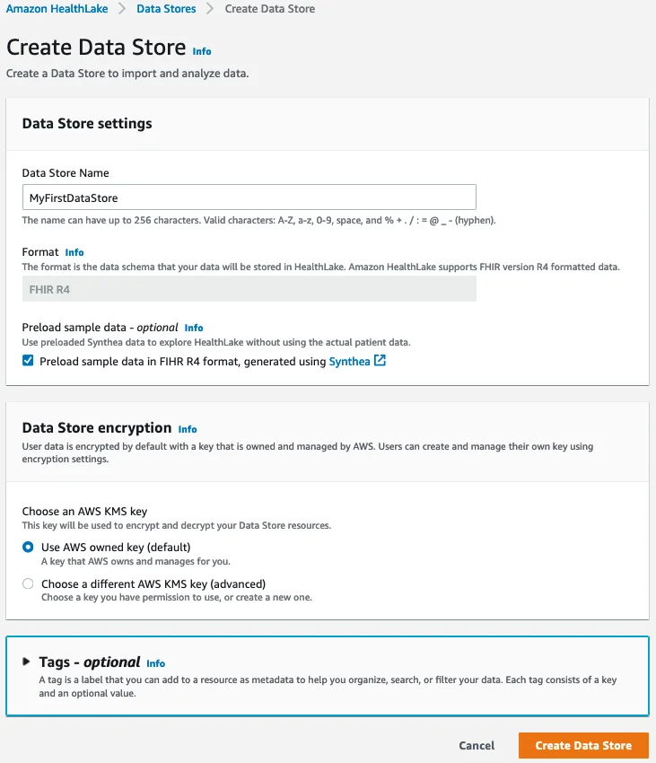
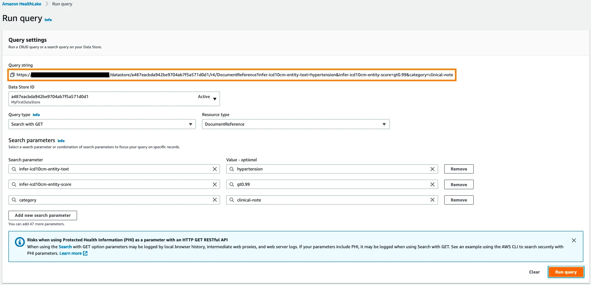
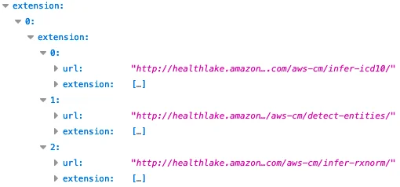
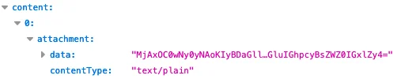

Published: 2021-07-15 | Originally published at AWS Blog
At AWS re:Invent 2020, we previewed Amazon HealthLake , a fully managed, HIPAA-eligible service that allows healthcare and life sciences customers to aggregate their health information from different silos and formats into a structured, centralized AWS data lake, and extract insights from that data with analytics and machine learning (ML). Today, I’m very happy to announce that Amazon HealthLake is generally available to all AWS customers.
The ability to store, transform, and analyze health data quickly and at any scale is critical in driving high-quality health decisions. In their daily practice, doctors need a complete chronological view of patient history to identify the best course of action. During an emergency, giving medical teams the right information at the right time can dramatically improve patient outcomes. Likewise, healthcare and life sciences researchers need high-quality, normalized data that they can analyze and build models with, to identify population health trends or drug trial recipients.
Traditionally, most health data has been locked in unstructured text such as clinical notes, and stored in IT silos. Heterogeneous applications, infrastructure, and data formats have made it difficult for practitioners to access patient data, and extract insights from it. We built Amazon HealthLake to solve that problem.
If you can’t wait to get started, you can jump to the AWS console for Amazon HealthLake now. If you’d like to learn more, read on!
Introducing Amazon HealthLake
Amazon HealthLake
is backed by fully-managed AWS infrastructure. You won’t have to procure, provision, or manage a single piece of IT equipment. All you have to do is create a new data store, which only takes a few minutes. Once the data store is ready, you can immediately create, read, update, delete, and query your data. HealthLake exposes a simple REST Application Programming Interface (API) available in the
most popular languages
, which customers and partners can easily integrate in their business applications.
Security is job zero at AWS. By default, HealthLake encrypts data at rest with AWS Key Management Service (AWS KMS) . You can use an AWS-managed key or your own key. KMS is designed so that no one, including AWS employees, can retrieve your plaintext keys from the service. For data in transit, HealthLake uses industry-standard TLS 1.2 encryption end to end.
At launch, HealthLake supports both structured and unstructured text data typically found in clinical notes, lab reports, insurance claims, and so on. The service stores this data in the Fast Healthcare Interoperability Resource (FHIR, pronounced ‘fire’) format, a standard designed to enable exchange of health data. HealthLake is compatible with the latest revision (R4) and currently supports 71 FHIR resource types , with additional resources to follow.
If your data is already in FHIR format, great! If not, you can convert it yourself, or rely on partner solutions available in AWS Marketplace . At launch, HealthLake includes validated connectors for Redox , HealthLX , Diameter Health , and InterSystems applications. They make it easy to convert your HL7v2, CCDA, and flat file data to FHIR, and to upload it to HealthLake.
As data is uploaded, HealthLake uses integrated natural language processing to extract entities present in your documents and stores the corresponding metadata. These entities include anatomy, medical conditions, medication, protected health information, test, treatments, and procedures. They are also matched to industry-standard ICD-10-CM and RxNorm entities.
After you’ve uploaded your data, you can start querying it, by assigning parameter values to FHIR resources and extracted entities. Whether you need to access information on a single patient, or want to export many documents to build a research dataset, all it takes is a single API call.
Let’s do a quick demo.
Querying FHIR Data in Amazon HealthLake
Opening the
AWS console
for HealthLake, I click on ‘Create a Data Store’. Then, I simply pick a name for my data store, and decide to encrypt it with an AWS managed key. I also tick the box that preloads sample synthetic data, which is a great way to quickly kick the tires of the service without having to upload my own data.

After a few minutes, the data store is active, and I can send queries to its HTTPS endpoint. In the example below, I look for clinical notes (and clinical notes only) that contain the ICD-CM-10 entity for ‘hypertension’ with a confidence score of 99% or more. Under the hood, the AWS console is sending an HTTP GET request to the endpoint. I highlighted the corresponding query string.

The query runs in seconds. Examining the JSON response in my browser, I see that it contains two documents. For each one, I can see lots of information: when it was created, which organization owns it, who the author is, and more. I can also see that HealthLake has automatically extracted a long list of entities, with names, descriptions, and confidence scores, and added them to the document.

The document is attached in the response in base64 format.

Saving the string to a text file, and decoding it with a command-line tool, I see the following:
Mr Nesser is a 52 year old Caucasian male with an extensive past medical history that includes coronary artery disease , atrial fibrillation , hypertension , hyperlipidemia , presented to North ED with complaints of chills , nausea , acute left flank pain and some numbness in his left leg
This document is spot on. As you can see, it’s really easy to query and retrieve data stored in Amazon HealthLake .
Analyzing Data Stored in Amazon HealthLake
You can
export data
from HealthLake, store it in an
Amazon Simple Storage Service (Amazon S3)
bucket and use it for analytics and ML tasks. For example, you could transform your data with
AWS Glue
, query it with
Amazon Athena
, and visualize it with
Amazon QuickSight
. You could also use this data to build, train and deploy ML models on
Amazon SageMaker
.
The following blog posts show you end-to-end analytics and ML workflows based on data stored in HealthLake:
Last but not least, this self-paced workshop will show you how to import and export data with HealthLake, process it with AWS Glue and Amazon Athena, and build an Amazon QuickSight dashboard.
Now, let’s see what our customers are building with HealthLake.
Customers Are Already Using Amazon HealthLake
Based in Chicago,
Rush University Medical Center
is an early adopter of HealthLake. They used it to build a public health analytics platform on behalf of the Chicago Department of Public Health. The platform aggregates, combines, and analyzes multi-hospital data related to patient admissions, discharges and transfers, electronic lab reporting, hospital capacity, and clinical care documents for COVID-19 patients who are receiving care in and across Chicago hospitals. 17 of the 32 hospitals in Chicago are currently submitting data, and Rush plans to integrate all 32 hospitals by this summer. You can learn more in this
blog post
.
Recently, Rush launched another project to identify communities that are most exposed to high blood pressure risks, understand the social determinants of health, and improve healthcare access. For this purpose, they collect all sorts of data, such as clinical notes, ambulatory blood pressure measurements from the community, and Medicare claims data. This data is then ingested it into HealthLake and stored in FHIR format for further analysis.
Says Dr. Bala Hota , Vice President and Chief Analytics Officer at Rush University Medical Center: “ We don’t have to spend time building extraneous items or reinventing something that already exists. This allows us to move to the analytics phase much quicker. Amazon HealthLake really accelerates the sort of insights that we need to deliver results for the population. We don’t want to be spending all our time building infrastructure. We want to deliver the insights. ”
Cortica is on a mission to revolutionize healthcare for children with autism and other developmental differences. Today, Cortica use HealthLake to store all patient data in a standardized, secured, and compliant manner. Building ML models with that data, they can track the progress of their patients with sentiment analysis, and they can share with parents the progress that their children are doing on speech development and motor skills. Cortica can also validate the effectiveness of treatment models and optimize medication regimens.
Ernesto DiMarino , Head of Enterprise Applications and Data at Cortica told us: “ In a matter of weeks rather than months, Amazon HealthLake empowered us to create a centralized platform that securely stores patients’ medical history, medication history, behavioral assessments, and lab reports. This platform gives our clinical team deeper insight into the care progression of our patients. Using predefined notebooks in Amazon SageMaker with data from Amazon HealthLake, we can apply machine learning models to track and prognosticate each patient’s progression toward their goals in ways not otherwise possible. Through this technology, we can also share HIPAA-compliant data with our patients, researchers, and healthcare partners in an interoperable manner, furthering important research into autism treatment. ”
MEDHOST provides products and services to more than 1,000 healthcare facilities of all types and sizes. These customers want to develop solutions to standardize patient data in FHIR format and build dashboards and advanced analytics to improve patient care, but that is difficult and time consuming today.
Says Pandian Velayutham , Sr. Director Of Engineering at MEDHOST: “ With Amazon HealthLake we can meet our customers’ needs by creating a compliant FHIR data store in just days rather than weeks with integrated natural language processing and analytics to improve hospital operational efficiency and provide better patient care. ”
Getting Started
Amazon HealthLake
is available today in the US East (N. Virginia), US East (Ohio), and US West (Oregon) Regions.
Give our self-paced workshop a try, and let us know what you think. As always, we look forward to your feedback. You can send it through your usual AWS Support contacts, or post it on the AWS Forums .
Want to learn more about Amazon HealthLake? Listen to the latest episode of the Official AWS Podcast to hear all about it .
- JulienJulien is the Artificial Intelligence & Machine Learning Evangelist for EMEA . He focuses on helping developers and enterprises bring their ideas to life. In his spare time, he reads the works of JRR Tolkien again and again.